I am a Data Scientist on the Ads team at Microsoft, where I work on text-to-image retrieval and multimodal modeling for ads in the Microsoft Audience Network. My work focuses on improving relevance and retrieval quality using representations that bridge vision and language, with applications in large-scale advertising systems. I earned my Ph.D. in Computer Science from The City University of New York, where my research focused on computer vision and deep learning. My dissertation, “Deep Learning-Based Human Action Understanding in Videos,” explored learning spatiotemporal representations from video data. During my graduate studies, I collaborated with researchers across multiple projects and worked on topics including visual scene understanding, video action detection, cross-modal retrieval, time-series analysis, and sign language understanding. At Microsoft, I build on this research background to develop and evaluate production-scale multimodal models that connect text and visual content in real-world ad scenarios.
| July 2024 | I joined Microsoft as a Data Scientist, currently working on text-to-image retrieval for ads in the Microsoft Audience Network. |
| December 2023 | I defended my Ph.D. thesis in Computer Science at The City University of New York, with a focus on Deep Learning-Based Human Action Understanding in Videos. |
| Fall 2021 | I completed an internship at Dataminr as a Research Science Intern. |
| Summer 2021 | I completed an internship at Expedia Group as a Data Science Intern. |
| Summer 2018 | I joined the Media Lab at The City University of New York as a Ph.D. student under the supervision of Professor Yingli Tian. |
Below is a summary of my research projects encompassing various areas of computer vision. These include Action Detection in Untrimmed Videos, Sign Language Understanding, Cross-Modal Retrieval, and Multi-camera Vehicle Tracking and Re-identification.
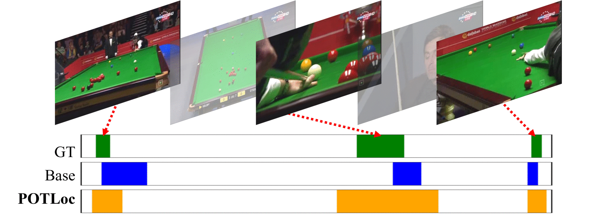
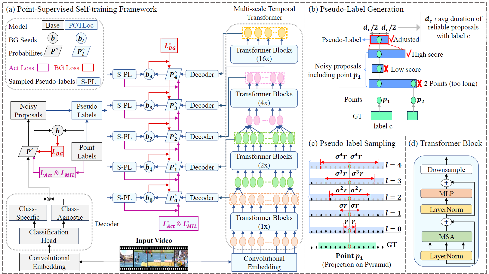
A Pseudo-label Oriented Transformer for weakly-supervised Action Localization utilizing only point-level annotation.
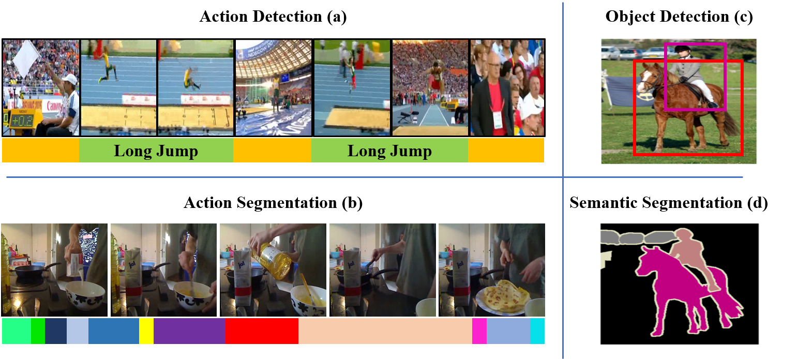
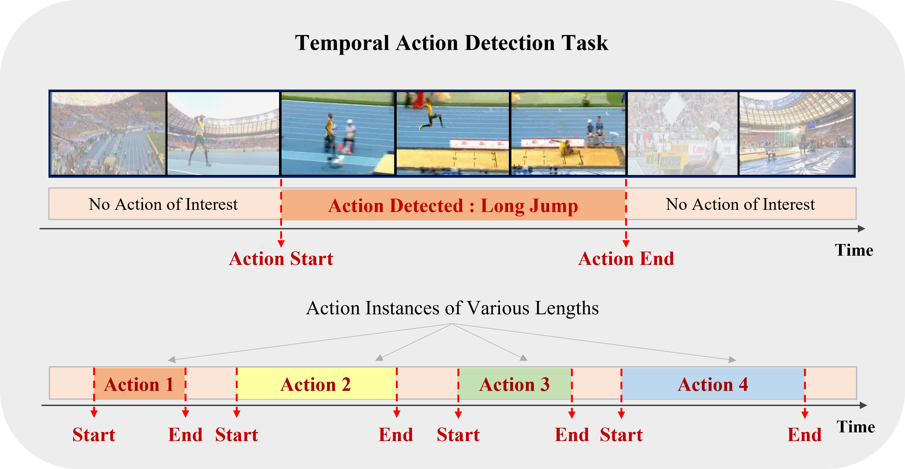
An extensive overview of deep learning-based algorithms to tackle temporal action detection in untrimmed videos with different supervision levels.
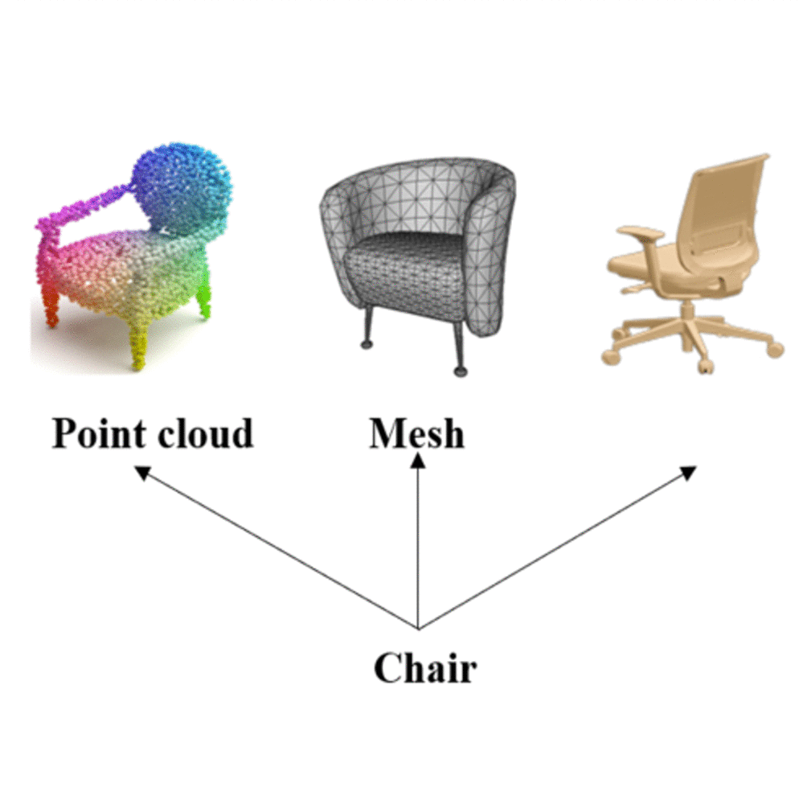
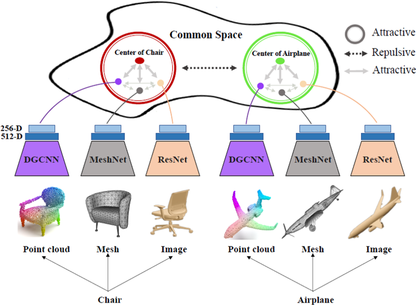
A novel cross-modal framework, designed to map representations from various modalities — such as images, mesh, and point-cloud — into a unified feature space.
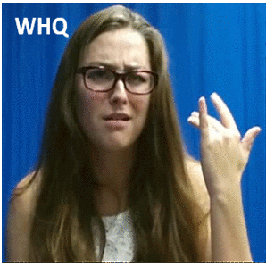
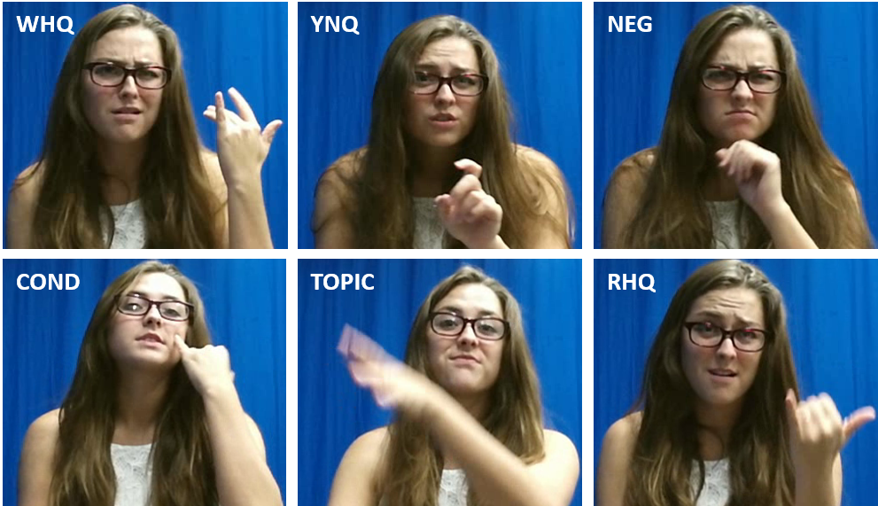
We developed an educational tool that enables sign language students to automatically process their signing video assignments and receive immediate feedback on their fluency. This tool utilizes deep learning algorithms for the detection of grammatically important elements in continuous signing videos.
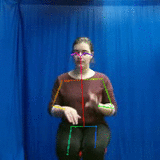
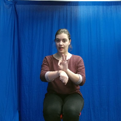
A multi-modal, multi-channel framework for the real-time recognition of American Sign Language (ASL) signs from RGB-D videos.
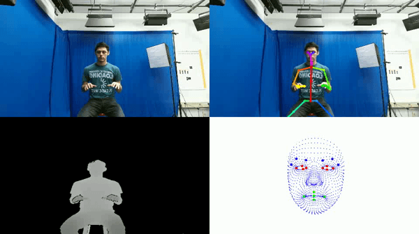
We have collected a new dataset consisting of color and depth videos of fluent American Sign Language (ASL) signers performing sequences of 100 ASL signs from a Kinect v2 sensor.
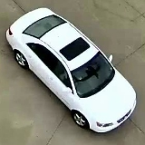
Our team's solutions for the image-based vehicle re-identification track and the multi-camera vehicle tracking track were featured in the AI City Challenge 2019. Our proposed framework significantly outperformed the current state-of-the-art vehicle ReID method, achieving a 16.3% improvement on the Veri dataset.
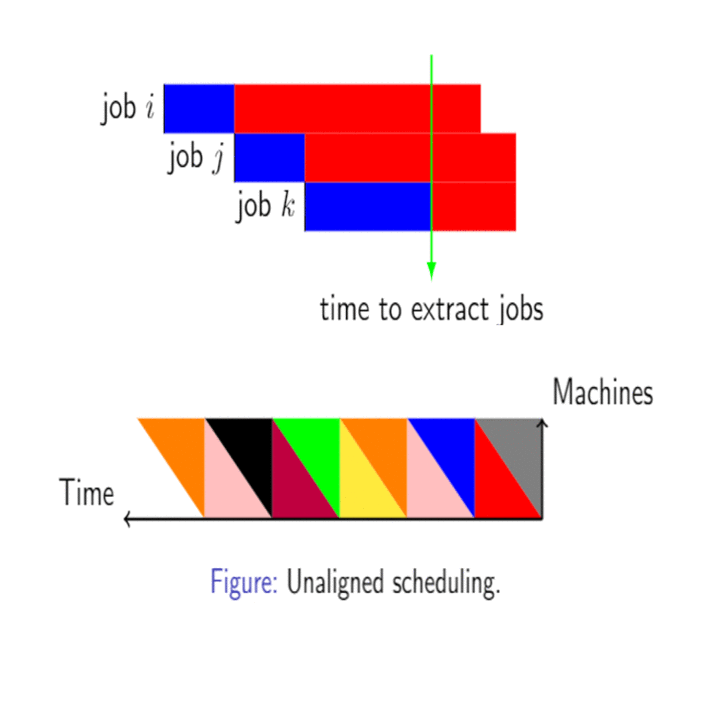
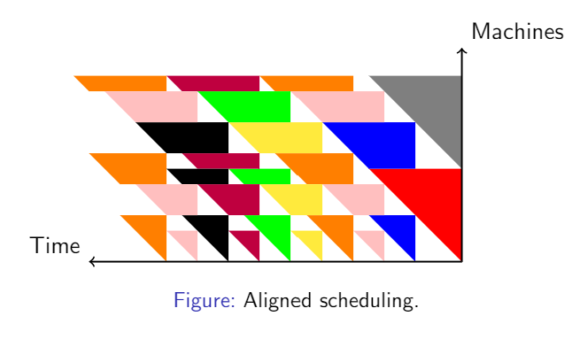
An approximation algorithm for the NP-hard optimization problem of scheduling a set of n given jobs, each with specific deadlines, using a minimum number of channels in a sensor network.